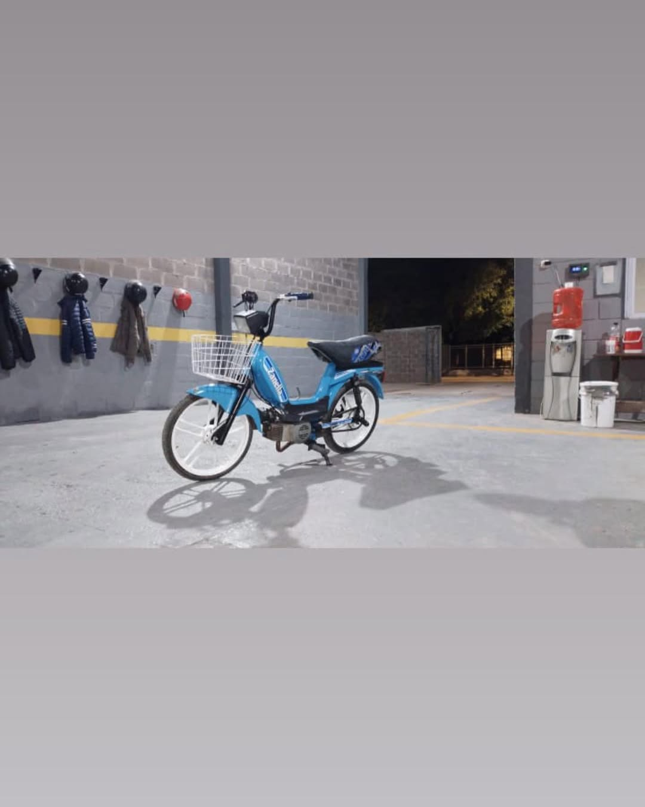
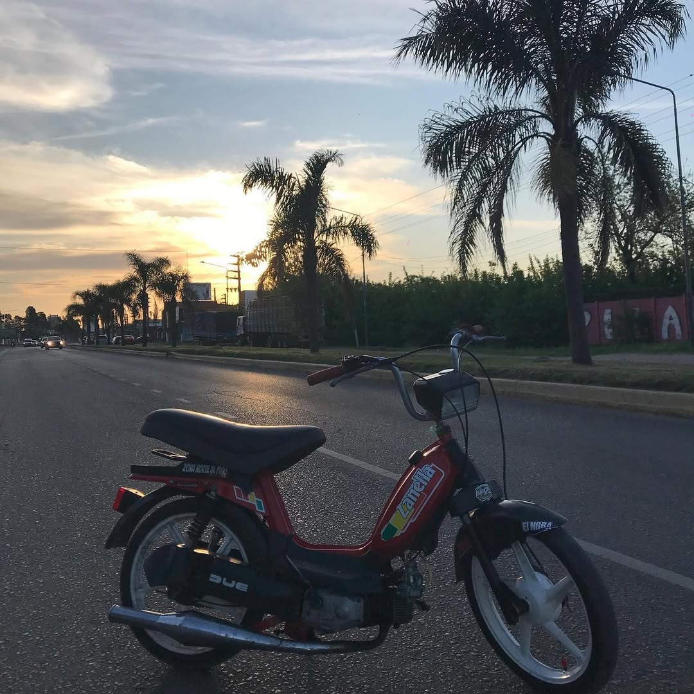
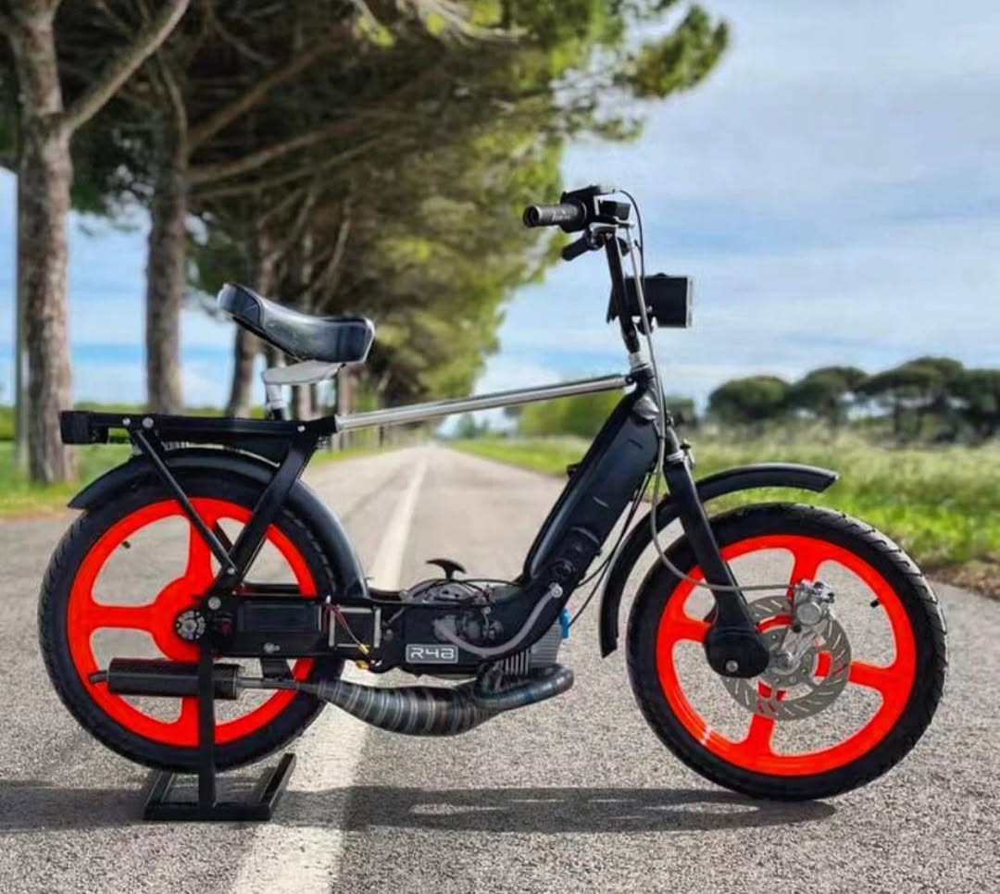
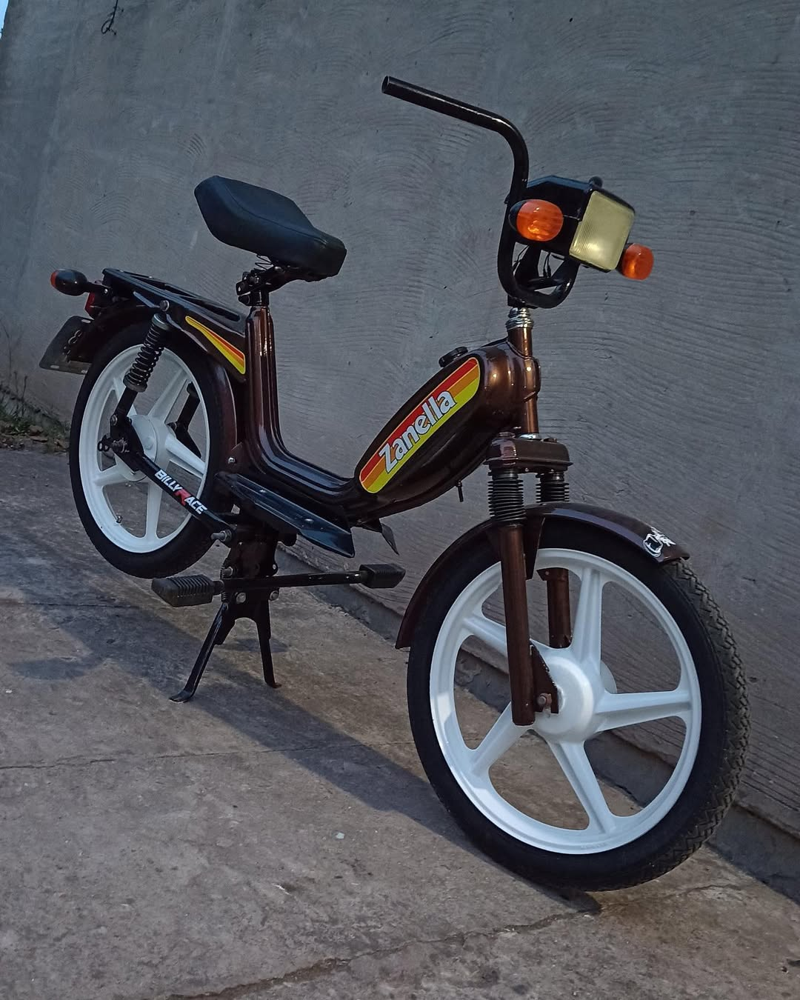
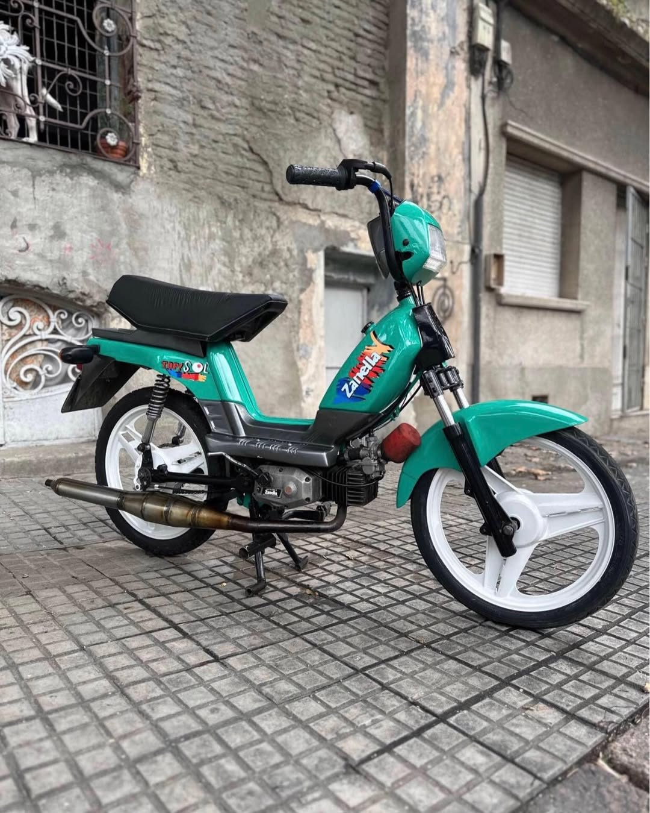
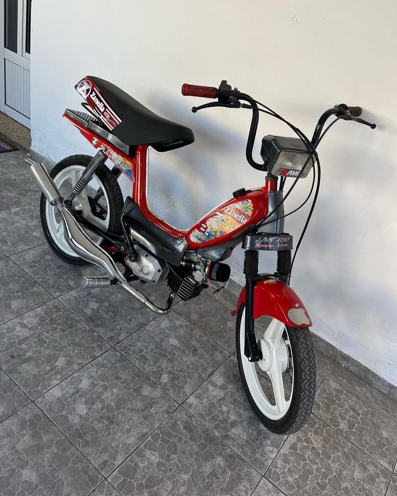
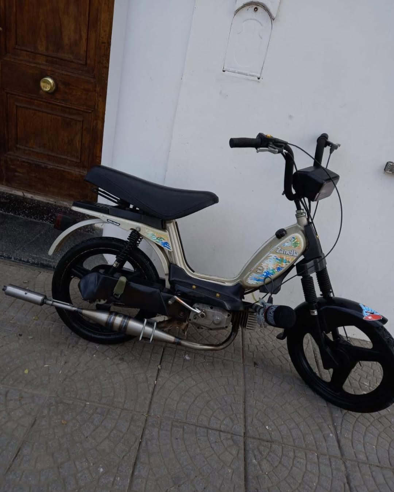
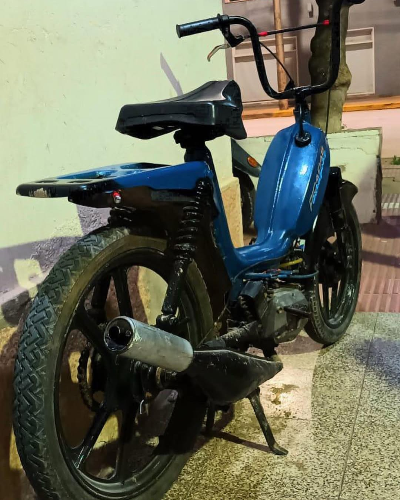
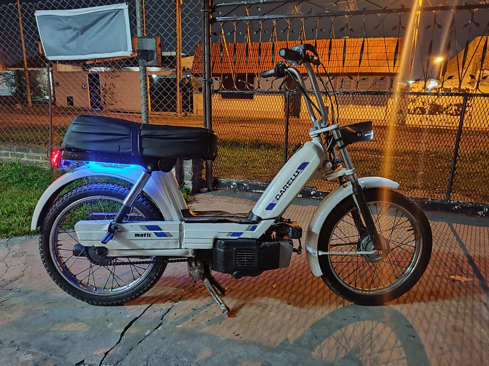

Galería de Ciclomotores

Zanella celeste de calle de Tomi Racing

Zanella roja 80cc de Lucas Custom

Garelli 80cc de Matías Team, puesta a punto para picadas

Zanella '80 restaurada por Eze Vintage

Zanella 90cc 2005 de Fede Torque, con motor armado

Zanella con escape cromado de Brian Mods

Zanella 50cc con sordina de Leo Garage

Juki 50cc de Nico Street, clásico y urbano

Garelli Matic 50cc de Santi Retro Style